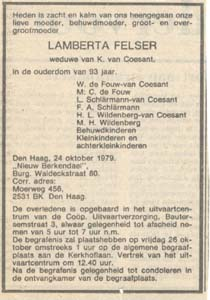
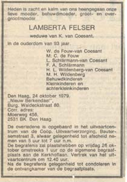

Het persoonsbewijs van mijn opa.
En het persoonsbewijs van mijn oma.


Hun trouwboekje, kijk eens hoe leuk.
En hun overlijdensberichten.
 

En van Jaap Pastijn heb ik het familie register toegestuurd gekregen.
Sjoerd Gerardus Mattheus Pastijn gehuwd met Maria van Coesant


Geboorte bewijs, huwelijksaankondiging en grafsteen Hendrika van Coesant - 25-07-1893 - 03-03-1982